Table Of Contents
- Application Editor
- BusinessTimeSpan Editor
- Composer Theme Editor
- Credentials Manager
- License Status Manager
- LocalMachineInfo Editor
- Log Viewer
- Messaging Console
- Schedule Editor
- Screen Capture Util
- Server Extensions Configurator
- Task Tray Tool
- ToolPreferences Editor
- Workflow Explorer
Start > Programs > Symantec > Workflow Designer > Tools > Composer Theme Editor
Form themes are design styles for the forms that include background, control, and text formatting. You can apply a theme to any form component, such as Form Builder or Terminating Form Builder. Use form themes when you want to improve
the appearance of your form and maintain a uniform style across all of your forms. You can apply one of the many preset form themes to your form, or you can create your own with the Web forms Theme Editor.Chapter 14 pg 362 - User Guide
You can create new form themes using the Web forms theme editor. After you have created a form theme, you can use your theme in any form component (such as the Form Builder component).
Chapter 42 pg 631 - User Guide
Symantec Glossary
Composer Theme Editor
A client tool for Workflow Solution that is used to create or edit themes for form components in Workflow Designer.https://www.symantec.com/security_response/glossary/define.jsp?letter=c&word=composer-theme-editor
File Location
"[Install Drive]:\Program Files\Symantec\Workflow\Designer\bin\LogicBase.Composer.ThemeEditor.exe"
Uses the ".xtheme" file extension.
Screenshot
Blank
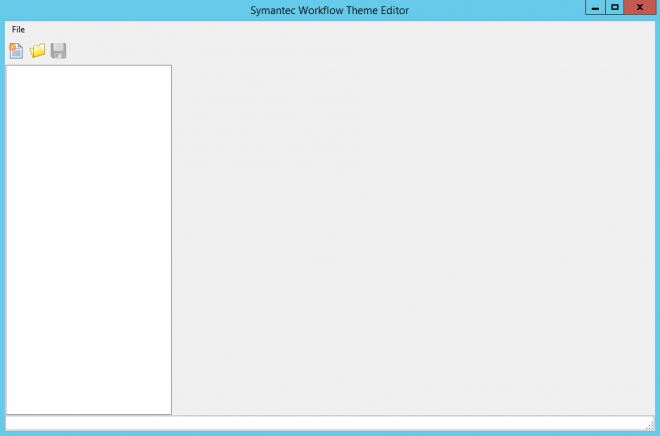
NEW
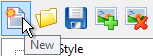
You then have the Form Style, Control Styles and Images to add to
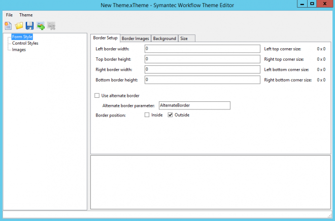
Open
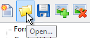
You will be taken to the Default Themes directory
[Install Drive]:\Program Files\Symantec\Workflow\Designer\Themes
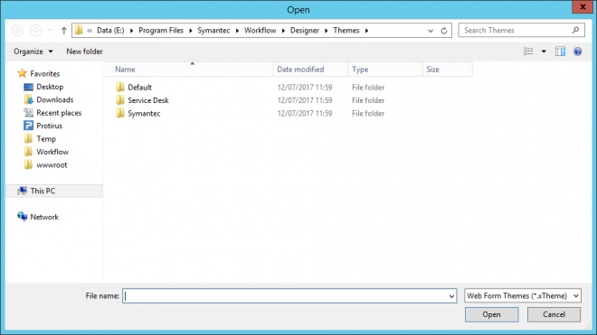
Save
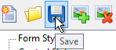
Add Image
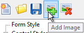
Click on Browse to search the file system for an image you need.
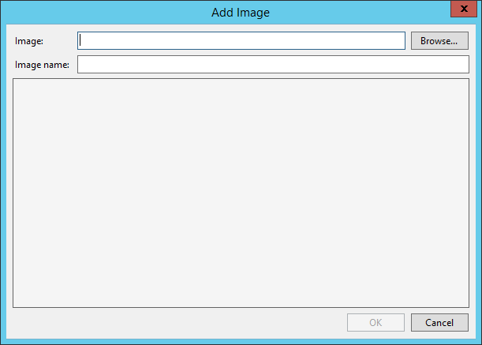
You may wish to change to the Images directory
[Install Drive]:\Program Files\Symantec\Workflow\Designer\Images\
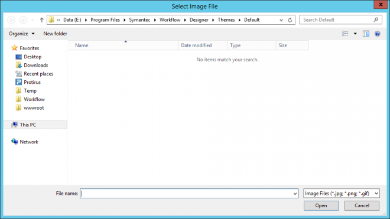
Pick an image and update the name, if necessary.
[Install Drive]:\Program Files\Symantec\Workflow\Designer\Images\general\Application Basics\about.png
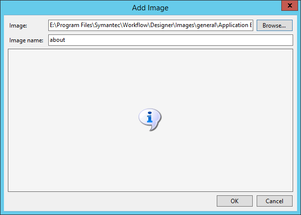
Delete Image
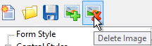
Pick a theme
[Install Drive]:\Program Files\Symantec\Workflow\Designer\Themes\Default\default blue clear.xtheme
CONTROL STYLES
Font
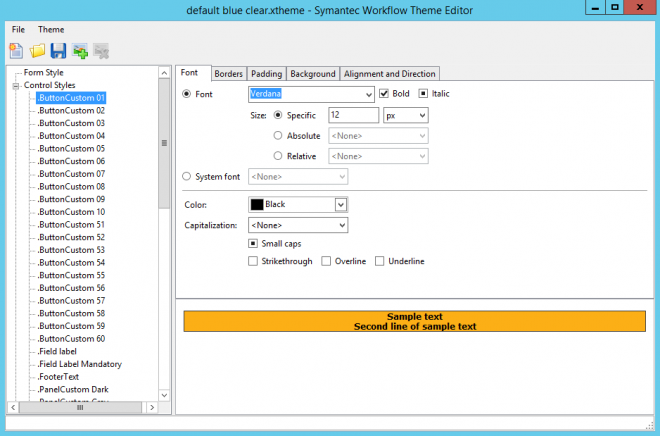
Borders
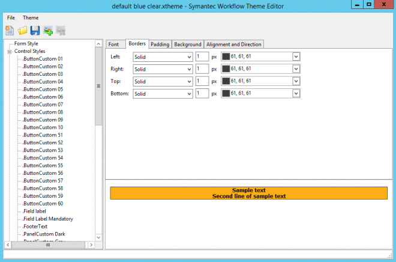
Padding
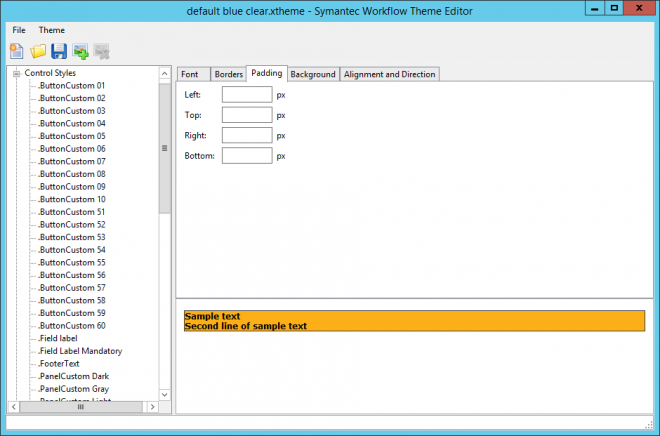
Background
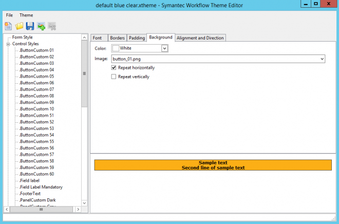
Alignment and Direction
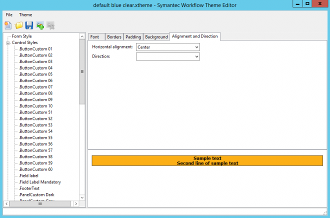
FORM STYLES
Border Setup
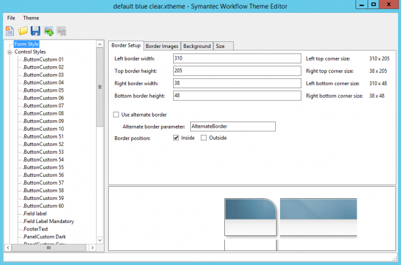
Border Images
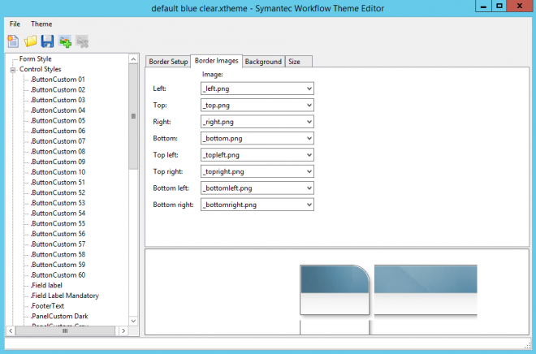
Background
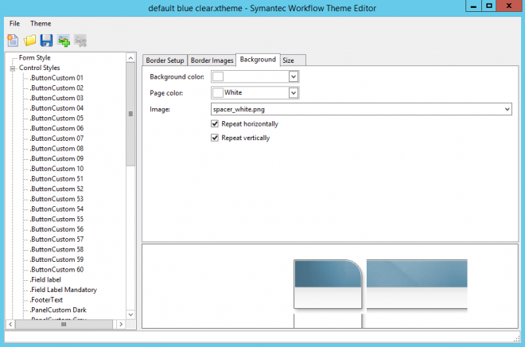
Size
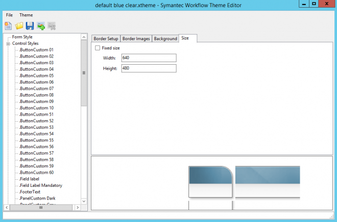
IMAGES
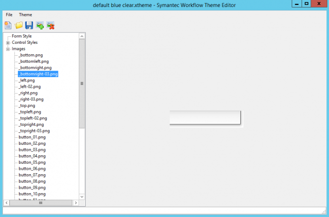
Articles
tracy.mcgee created "Creating Workflow Themes"
Help
Creating a form theme
https://support.symantec.com/en_US/article.HOWTO62189.html